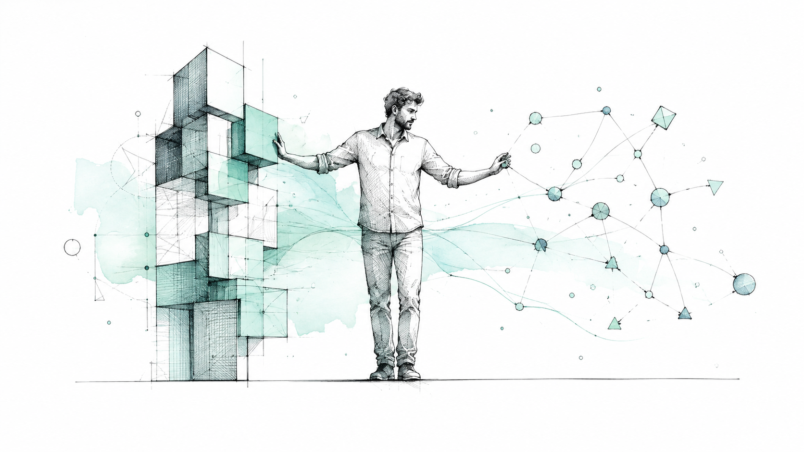
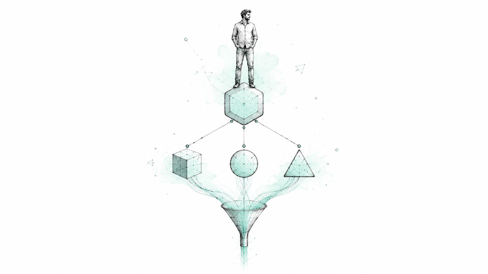
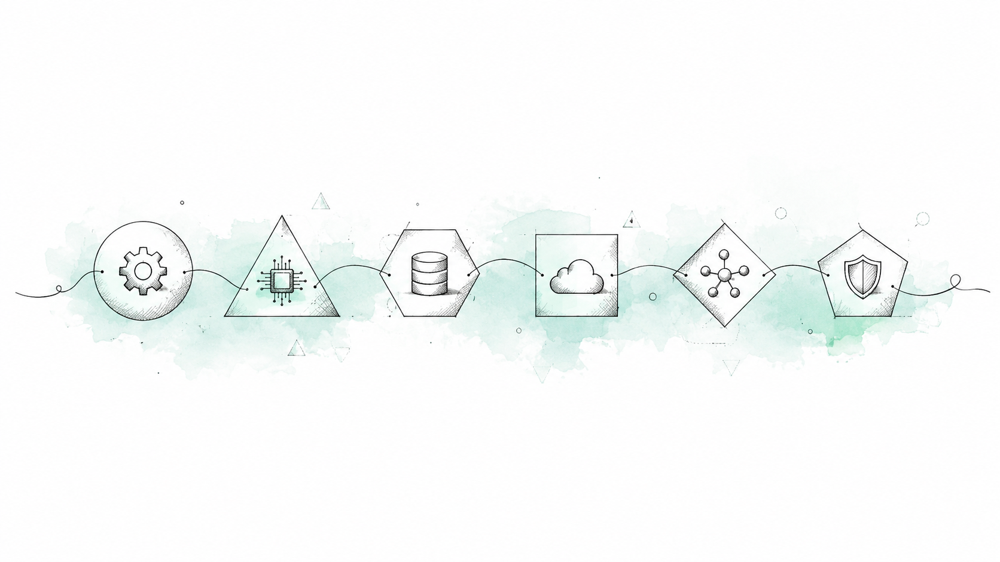
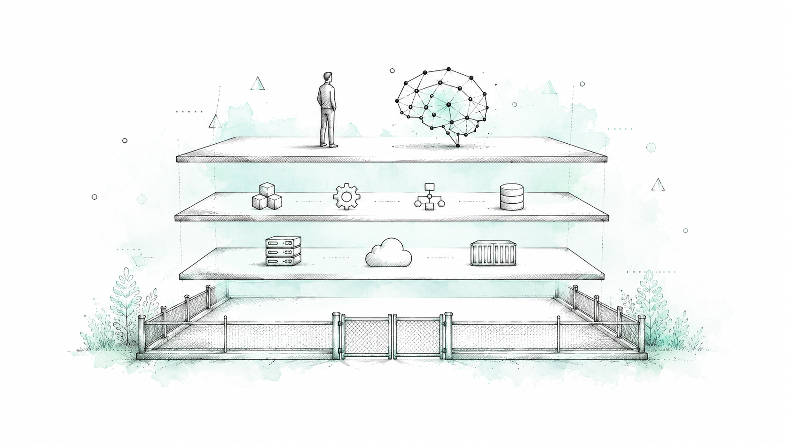
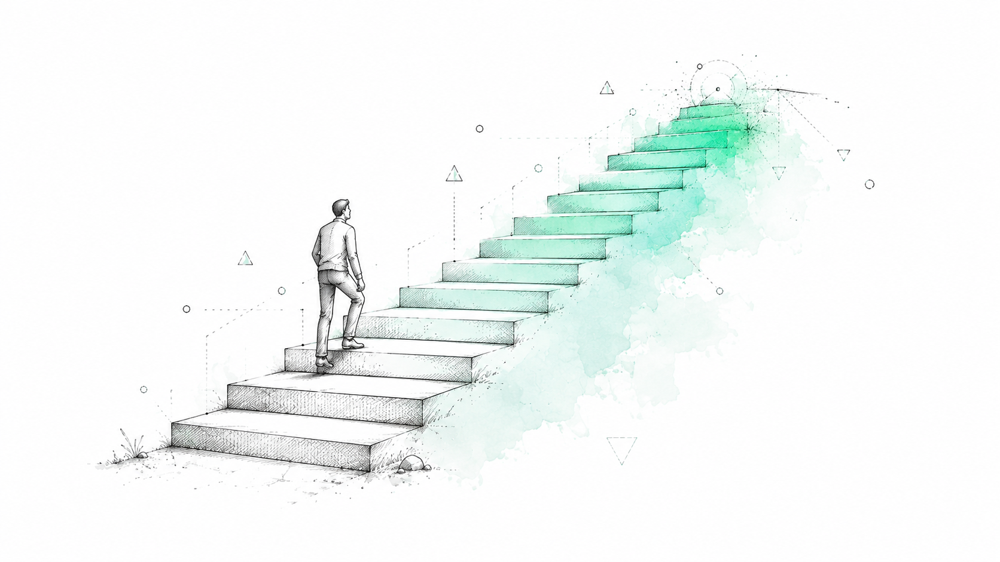
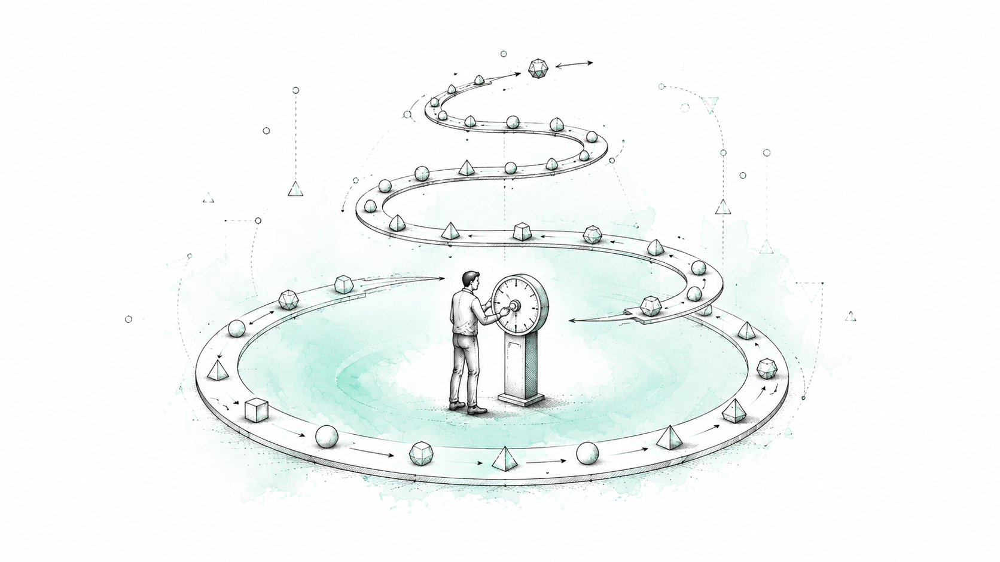

What actually changes?

The modern production system grew far beyond frontend, backend, and a database.
The engineer is no longer simply writing software — they're orchestrating its production.

Prompting is only a small part of the picture.
Narrower agent responsibility improves control and quality — but only with coordination.

AI Models, Agents, Tools, RAG, Context, Orchestration, Evaluation, Observability, Governance.

If AI makes code generation cheaper, raw code production becomes less differentiated.

Using AI means asking a model to write code. Engineering with AI means designing the environment where it can safely contribute.
